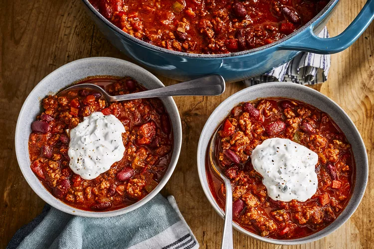

Chili Recipe

Description
Tomato based sauce, slightly spicy with ground beef combined with red
kidney beans.
Ingrients
- 4 tablespoons of olive oil.
- 1 onion chopped.
- 1 red bell pepper chopped.
- 1 chili pepper chopped.
- 2 jalapeno peppers chopped.
- 4 garlic cloves.
- 800g of ground lean beef.
- 3 tablespoons of Worcestershire sauce.
- 2 beef stock cubes.
- 800g of chopped tomatoes.
- 3 tablespoons of tomato puree.
- 2 tablespoons of chili powder.
- 2 tablespoons of ground cumin.
- 1 tablespoon of brown sugar.
- 2.5 teaspoons of dried basil.
- 1.5 teaspoons of smoked paprika.
- 1 teaspoon of salt.
- Half teaspoon of dried oregano.
- Half teaspoon of ground pepper.
- 400g of red kidney beans.
- 300g of sour cream.
Steps
- In a large saucepan, heat oil and cook the onion, bell pepper,
jalapeno peppers and garlic until softened.
- In a large skillet, brown the ground beef, then add Worcestershire
sauce and crumble the stock cubes. Then add beef mixture to the
pepper pan.
- Stir in chopped tomatoes and the puree, season with chili powder
cumin, brown sugar, basil, paprika, salt, oregano and balck pepper.
Reduce heat and simmer for 1 hour.
- Mix kidney beans in and simmer for a further 30 mins.
- Serve with sour cream.